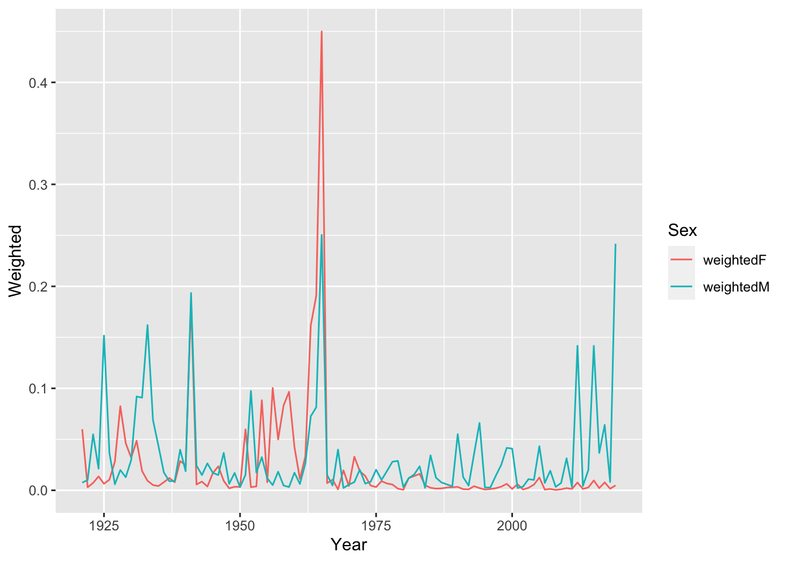

Lab1
Lab 1
(not finished)
- Plot the ratio of male to female mortality rates over time for ages 10,20,30 and 40 (different color for each age) and change the theme
- Find the age that has the highest female mortality rate each year
# A tibble: 102 x 2
# Groups: Year [99]
Year Age
<dbl> <chr>
1 1921 106
2 1922 98
3 1923 104
4 1924 107
5 1925 98
6 1926 106
7 1927 106
8 1928 104
9 1929 104
10 1930 105
# … with 92 more rows- Use the `summarize(across())` syntax to calculate the standard deviation of mortality rates by age for the Male, Female and Total populations.
# A tibble: 111 x 4
Age Male Female Total
<chr> <dbl> <dbl> <dbl>
1 0 0.0330 0.0256 0.0294
2 1 0.00396 0.00352 0.00374
3 10 0.000561 0.000474 0.000509
4 100 0.138 0.0928 0.0729
5 101 0.158 0.125 0.0995
6 102 0.214 0.143 0.114
7 103 0.371 0.252 0.208
8 104 1.01 0.449 0.363
9 105 1.29 1.27 1.27
10 106 1.13 1.21 1.20
# … with 101 more rows- The Canadian HMD also provides population sizes over time (https://www.prdh.umontreal.ca/BDLC/data/ont/Population.txt). Use these to calculate the population weighted average mortality rate separately for males and females, for every year. Make a nice line plot showing the result (with meaningful labels/titles) and briefly comment on what you see (1 sentence). Hint: `left_join` will probably be useful here.
